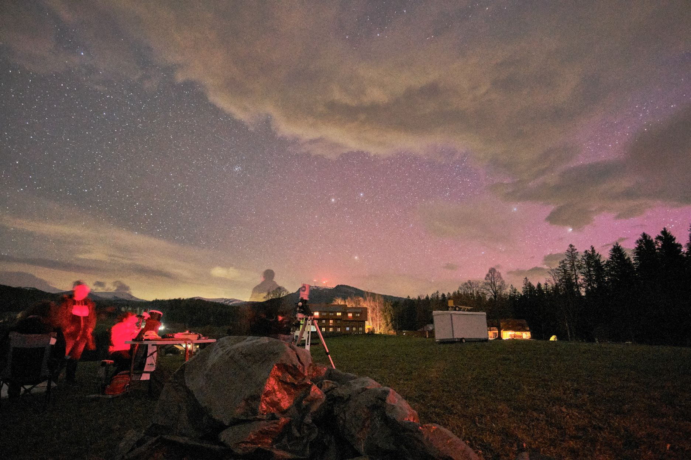

Ha valakit érdekel a csillagászat közzöségi szinten, minden lista elején
a Magyar Csillagászati Egyesület (MCSE) szerepel, jó okkal. Ez hazánk legrégebbi és legnagyobb
ilyen témájú egyesülete, számos helyi csoporttal, remek közösségi programokkal.
Érdemes is keresni a lehetőséget a személyes találkozásra, mert sokszor sokkal egyszerűbb
így megoldani a hobbi elkezdésével felmerülő kérdéseket, leginkább a távcső és
mechanika beállításával kapcsolatos problémákat, amik rendszerint felmerülnek, hiszen nem
feltétlenül magától értetődő ezeknek az összetett műszereknek a megfelelő használata.
Legnagyobb program minden évben rendszerint a nyári tábor, ahol manapság már több száz érdeklődő
szokott összegyűlni néhány napra, amiből általában legalább néhány derült éjszaka szokott adódni a közös csillagászkodásra,
eszmecserére és egyéb programokra.
Másik, mára már országos méretű egyesület a Vega Csillagászati Egyesület (VCSE),
amely erediteleg egy zalaegerszegi egyesületként indult, de mára már az egész országban vannak tagjai,
többek között Szegeden és külföldön is. Szintén szerveznek nyári táborokat, amelyek kisebb létszámmal
családiasabb hangulatban, és talán sötétebb ég alatt szoktak zajlani, ég állapotától függetlenül jó hangulattal.
Utóbbi években Ausztriában is rendszeressé váltak "expedíciók", illetve több észlelőhétvége is egy évben,
amelyek általában Zalaegerszeg közelében kerülnek megrendezésre.

Szegeden pedig utóbbi években lett ismét aktívabb az MCSE alatt futó Szegedi Helyi Csoport (SZHCS),
mely nagy múltra tekint vissza, hiszen több, ma intézetvezető csillagászprofeszor is tagja volt.
Szoros összefonódásban van az SZTE-vel, hiszen központja a Szegedi Csillagvizsgáló,
és amatőr- és szakcsillagászok együtt tartanak bemutatót, nyáron hullócsillaglest, és egyre inkább rendszeressé
váló közös csillagleseket.
Választék tehát van bőven, akit érdekel a csillagászat és szeretne hasonló érdeklődésű
emberekkel találkozni, vegye fel a kapcsolatot valamelyik egyesülettel a fenti linkeken.